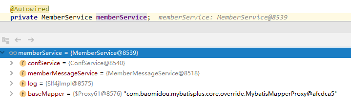
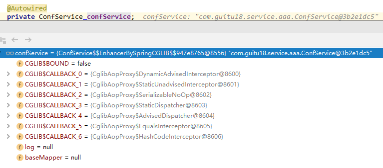
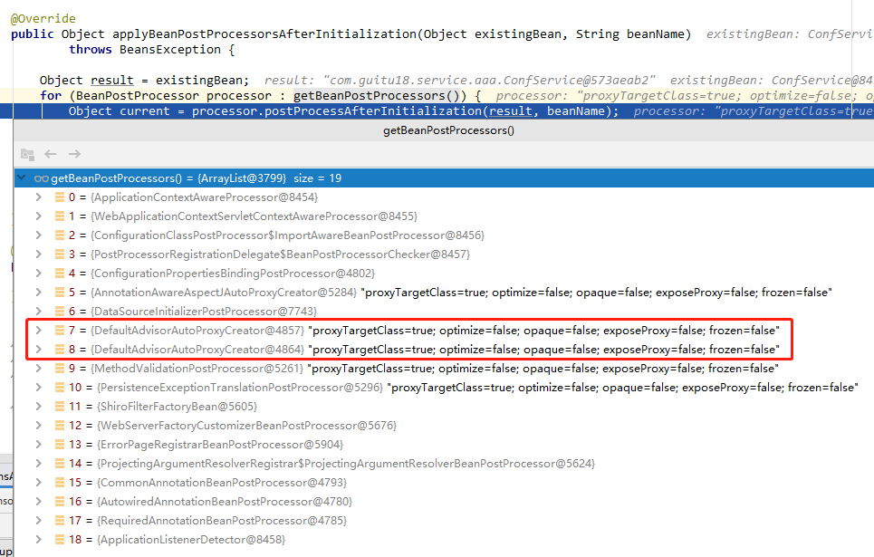
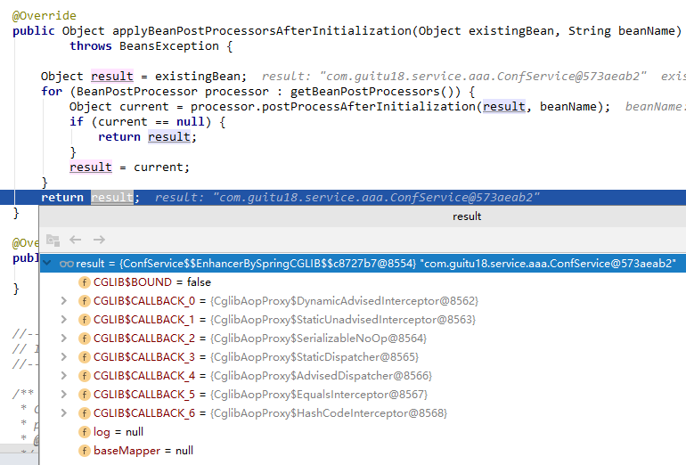
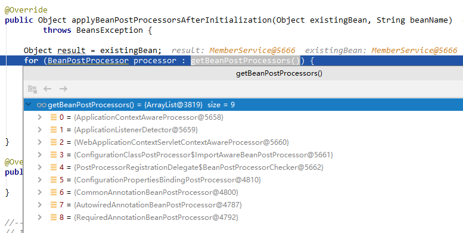

昨天遇到一个非常奇怪的问题，在一个Service中使用@Transactional注解的一个方法无论如何都不能开启事务。项目用的是Springboot和Mybatis Plus，权限验证用的是Shiro。Service层的伪代码如下：
@Transactional(rollbackFor = Exception.class)
public void register(String username, String password) {
Member member = new Member();
... ...
this.save(member);
MemberMessage memberMessage = new MemberMessage();
... ...
memberMessageService.save(memberMessage);
}当memberMessage插入失败抛异常时，前面保存的member记录不会回滚。打断点发现，只要save(member)这行走完数据就直接插入，此时方法还没执行完，按道理事务应该还没提交，但是通过Navicat已经能够看到新增的记录了。怀疑是事务压根没开启，遂将logging.level.root日志等级改为DEBUG发现压根就没开启事务。
找不到原因，往上层追查，这个方法是在Controller通过@Autowired注入并调用的。之后我在这个Controller中注入其他Service添加测试方法testSave()，Controller伪代码如下：
@Autowired
private MemberService memberService;
@Autowired
private ConfService confService;
@RequestMapping("/register")
public JsonResult register(String username, String password) {
confService.testSave();
// memberService.register(username, password);
return JsonResult.ok();
}测试发现事务是生效的，且如果发生异常是能够回滚的，事务正常提交日志如下：
o.s.j.d.DataSourceTransactionManager : Creating new transaction with name [com.guitu18.service.base.ConfService$$EnhancerBySpringCGLIB$$82a30421.testSave]: PROPAGATION_REQUIRED,ISOLATION_DEFAULT,-java.lang.Exception
o.s.j.d.DataSourceTransactionManager : Acquired Connection [com.mysql.jdbc.JDBC4Connection@10d912c1] for JDBC transaction
o.s.j.d.DataSourceTransactionManager : Switching JDBC Connection [com.mysql.jdbc.JDBC4Connection@10d912c1] to manual commit
o.s.j.d.DataSourceTransactionManager : Participating in existing transaction
o.s.j.d.DataSourceTransactionManager : Participating in existing transaction
org.mybatis.spring.SqlSessionUtils : Creating a new SqlSession
org.mybatis.spring.SqlSessionUtils : Registering transaction synchronization for SqlSession [org.apache.ibatis.session.defaults.DefaultSqlSession@734d6117]
o.m.s.t.SpringManagedTransaction : JDBC Connection [com.mysql.jdbc.JDBC4Connection@10d912c1] will be managed by Spring
c.g.mapper.base.ClanPlayerMapper.insert : ==> Preparing: INSERT INTO conf ( name, value ... ) VALUES ( ?, ? )
c.g.mapper.base.ClanPlayerMapper.insert : ==> Parameters: 123(String), 45(String)
c.g.mapper.base.ClanPlayerMapper.insert : <== Updates: 1
org.mybatis.spring.SqlSessionUtils : Releasing transactional SqlSession [org.apache.ibatis.session.defaults.DefaultSqlSession@734d6117]
org.mybatis.spring.SqlSessionUtils : Transaction synchronization committing SqlSession [org.apache.ibatis.session.defaults.DefaultSqlSession@734d6117]
org.mybatis.spring.SqlSessionUtils : Transaction synchronization deregistering SqlSession [org.apache.ibatis.session.defaults.DefaultSqlSession@734d6117]
org.mybatis.spring.SqlSessionUtils : Transaction synchronization closing SqlSession [org.apache.ibatis.session.defaults.DefaultSqlSession@734d6117]
o.s.j.d.DataSourceTransactionManager : Initiating transaction commit
o.s.j.d.DataSourceTransactionManager : Committing JDBC transaction on Connection [com.mysql.jdbc.JDBC4Connection@10d912c1]
o.s.j.d.DataSourceTransactionManager : Releasing JDBC Connection [com.mysql.jdbc.JDBC4Connection@10d912c1] after transaction
o.s.jdbc.datasource.DataSourceUtils : Returning JDBC Connection to DataSource这下子我就纳闷了，肯定是有什么我没留意到的地方有疏漏，继续找。先确认了数据库的表类型是InnoDB能够支持事务没错，接着检查Spring配置，所在包名，以及是否被Spring扫描等等原因，后面我直接将这两个Service挪到同一个包下继续测试，甚至修改了包结构，依然还是ConfService能正常开启事务，MemberService怎么也开启不了事务。
百度也查了，比如@Transaction注解不生效原因，我每条都确认了没问题。
@Transaction默认检测异常为RuntimeException及其子类 如果有其他异常需要回滚事务的需要自己手动配置，例如：@Transactional(rollbackFor = Exception.class)@Transaction的方法调用有@Transaction的方法不会生效，因为代理问题然后昨天为了这个问题折腾的太久，人弄疲了就先放着了。今天接着继续研究，一路打断点到TransactionAspectSupport类中，再到ReflectiveMethodInvocation.proceed()，invokeJoinpoint()等方法。
protected Object invokeJoinpoint() throws Throwable {
return this.publicMethod ? this.methodProxy.invoke(this.target, this.arguments) : super.invokeJoinpoint();
}我发现事务生效的情况下，都会一路走到上面这个方法上，这里判断如果是public方法，则通过代理对象调用实际业务，至此事务也开启并加入且生效了。然而那个事务始终不能开启的MemberService压根就不会走到这里来。
这时候我突然想到，该不会是MemberService这个类没有被代理吧，在Controller中打断点查看发现MemberService压根就不是代理对象，@Autowired注入的是原始对象的实例。

检查该Controller中注入的另一个ConfService，确实是代理对象没错了。

那么问题来了，为什么这个MemberService没有被代理。之前已经做过各种检查了，甚至将这两个类放到同一个包下，肯定不是Spring扫描产生的问题。问题出在哪里呢？继续找。
从MemberService被引用的地方入手，一路找Shiro的授权认证器AuthorizingRealm这里。
@Component
public class MemberAuthorizingRealm extends AuthorizingRealm {
@Autowired
private MemberService memberService;
@Override
protected AuthorizationInfo doGetAuthorizationInfo(PrincipalCollection principalCollection) {
... ...
}
@Override
protected AuthenticationInfo doGetAuthenticationInfo(AuthenticationToken authenticationToken) throws AuthenticationException {
Member member = memberService.getById(token.getUsername());
... ...
}
}这里乍一看也没什么不对是吧，但是经代码过测试问题就出在这里。这里我如果不注入MemberService，那么在其他地方通过@Autowired注入的就是被代理的实例。What？为什么会这样？
不知道原因，看来还是要向上追溯，那么这个AuthorizingRealm又是在哪里引用的呢，继续顺着线索往上找。这个类在ShiroConfig中以@Bean的方式注入到SecurityManager中了。
@Bean("securityManager")
public SecurityManager securityManager(MemberAuthorizingRealm userRealm) {
DefaultWebSecurityManager securityManager = new DefaultWebSecurityManager();
securityManager.setRealm(userRealm);
securityManager.setRememberMeManager(null);
return securityManager;
}既然是跟配置有关系，那么我联想可能是跟初始化顺序有关系，配置相关的东西一般都是被优先加载的。找到这里我想到了Spring的生命周期，隐约感觉真相已经呼之欲出了，赶紧去Spring的Bean初始化流程瞧一瞧，答案肯定是在那里。
Spring的初始化流程很复杂，这里只截取重要的部分记录一下，有兴趣的请自行查看Spring初始化相关源码。首先我们找到代理被创建的地方AbstractAutowireCapableBeanFactory.applyBeanPostProcessorsAfterInitialization()
@Override
public Object applyBeanPostProcessorsAfterInitialization(Object existingBean, String beanName)
throws BeansException {
Object result = existingBean;
// 这里通过getBeanPostProcessors()拿到所有的Bean后置处理器并执行
for (BeanPostProcessor processor : getBeanPostProcessors()) {
Object current = processor.postProcessAfterInitialization(result, beanName);
if (current == null) {
return result;
}
result = current;
}
return result;
}在这里会拿到并执行所有的Bean后置处理器，先找到那个可以开启事务的ConfService，加个断点看看他的beanPostProcessors中都有些什么。

框起来的这两个DefaultAdvisorAutoProxyCreator就是创建代理对象的处理器，至于为什么会有两个现在还不知道，先解决我眼前的问题先。这里执行完所有的BeanPostProcessor之后，得到的就是代理对象了。

上面创建代理的代码在AbstractAutoProxyCreator中，分别是postProcessAfterInitialization()和wrapIfNecessary()，代码如下：
public Object postProcessAfterInitialization(@Nullable Object bean, String beanName) throws BeansException {
if (bean != null) {
Object cacheKey = this.getCacheKey(bean.getClass(), beanName);
if (!this.earlyProxyReferences.contains(cacheKey)) {
return this.wrapIfNecessary(bean, beanName, cacheKey);
}
}
return bean;
}
// 代理就是在这个方法中创建的，当然创建之前做了各种if判断
protected Object wrapIfNecessary(Object bean, String beanName, Object cacheKey) {
if (StringUtils.hasLength(beanName) && this.targetSourcedBeans.contains(beanName)) {
return bean;
} else if (Boolean.FALSE.equals(this.advisedBeans.get(cacheKey))) {
return bean;
} else if (!this.isInfrastructureClass(bean.getClass()) && !this.shouldSkip(bean.getClass(), beanName)) {
Object[] specificInterceptors = this.getAdvicesAndAdvisorsForBean(bean.getClass(), beanName, (TargetSource)null);
if (specificInterceptors != DO_NOT_PROXY) {
this.advisedBeans.put(cacheKey, Boolean.TRUE);
// 创建代理对象
Object proxy = this.createProxy(bean.getClass(), beanName, specificInterceptors, new SingletonTargetSource(bean));
this.proxyTypes.put(cacheKey, proxy.getClass());
return proxy;
} else {
this.advisedBeans.put(cacheKey, Boolean.FALSE);
return bean;
}
} else {
this.advisedBeans.put(cacheKey, Boolean.FALSE);
return bean;
}
}再回头找到那个MemberService，他的beanPostProcessors列表中可没有那么多东西，可以看在他的processor列表中创建代理的处理器DefaultAdvisorAutoProxyCreator确实是没有的。

这个方法执行完之后，返回的就普通的对象了。我们都知道在Spring中，数据库事务都是通过AOP实现的，想要支持事务这个类必须被代理才行。至此本篇开头提到的MemberService中无法开启事务的真相找到了，因为Controller中注入的MemberService以@Bean的方式配置到Spring中，导致被提前初始化而未能创建代理，所以不能开启事务。
捋一捋：
@Autowired注入了本篇的主角MemberService。@Autowired注入的其他依赖，那么会一并初始化，依赖中要是还有依赖会继续递归初始化，这样下来会导致一系列的实例都是没有被代理的。解决方案：既然MemberAuthorizingRealm中不能通过@Autowired注入MemberService，那我们变通一下，不用第一时间注入，等需要用到的时候再向Spring索取就好了。
这里第一个想到的肯定就是ApplicationContext了，这好办，写一个ApplicationContext工具类：
@Component
public class ApplicationContextUtils implements ApplicationContextAware {
public static ApplicationContext applicationContext;
@Override
public void setApplicationContext(ApplicationContext applicationContext) throws BeansException {
ApplicationContextUtils.applicationContext = applicationContext;
}
public static Object getBean(String beanName) {
return applicationContext.getBean(beanName);
}
public static <T> T getBean(Class<T> type) {
return applicationContext.getBean(type);
}
}通过实现ApplicationContextAware接口拿到ApplicationContext，后面就可以随心所以了，MemberAuthorizingRealm中需要用到MemberService的时候我们可以这么写：
MemberService memberService = ApplicationContextUtils.getBean(MemberService.class);在其他类似的地方，如果何需要支持事务或者用到代理对象的地方，都可以通过这种方式获取。另外顺带提一下，如果需要用到对象原始的实例（非代理对象），我们可以通过在Bean名称前面加一个&获取，还是以MemberService举栗：
MemberService memberService = ApplicationContextUtils.getBean("&memberService");这样拿到的就是常规实例对象了，相关知识点：FactoryBean，之前写过一篇，请参考：
Spring中FactoryBean的作用和实现原理 https://www.guitu18.com/post/2019/04/28/33.html
本次排查记录总结：
@Configuration注解的配置类中，通过@Bean注册的对象是没有被创建代理的，如果你的业务需要使用到代理，请不要使用这种方式。@Bean直接注入，在被@Bean注册的对象直接依赖（@Autowired注入等）也会导致该对象提前初始化，没有被创建代理。@Bean注册的对象中用到代理对象，可以从ApplicationContext中获取到。